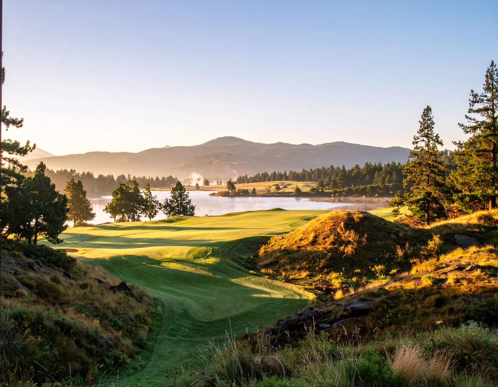

Teugega Country Club, a Donald Ross design tucked beside Lake Delta in Rome, New York, has earned national recognition as one of the best-preserved classic courses in the country. Ross authorities consider it among the top 10 percent of original Ross layouts still intact, and Golf Digest's panel of raters routinely praises it as a hidden gem. Built in 1921 and barely touched since, it is a genuine time capsule from one of golf's greatest architects, and the wider golf world is finally catching on.

A Living Museum: The Preservation of Donald Ross's Vision
Tucked away on the shores of Lake Delta in Rome, New York, Teugega Country Club stands as a monument to classic golf course architecture. Designed by the legendary Scottish-born architect Donald Ross and opened in 1921, this private enclave has achieved something remarkably rare in the modern era: it has remained virtually untouched. While Ross is celebrated for designing over 400 courses—including iconic championship venues like Pinehurst No. 2 and Oak Hill—the vast majority of his layouts have been altered, modernized, or outright redesigned over the past century, frequently diluting his original intent. Teugega, by contrast, escaped this trend, preserving Ross’s design layout in its purest form.
This fidelity to the original blueprint has earned Teugega elite status among historians and architecture aficionados. Architectural authorities categorize the course in the top 10 percent of all surviving Ross designs for historical preservation. It functions as a living archive, allowing golfers to experience the exact strategic questions Ross posed over a century ago. In an industry where legacy is often sacrificed for modern distance defenses, Teugega's preservation has transformed a quiet local club into a national architectural treasure.
Subtle Defenses: Routing, Greens, and Classic Architectural Character
The praise for Teugega is not restricted to historians; it extends to active rating panels. Golf Digest’s selection of approximately 1,900 course raters routinely awards the layout high marks, frequently identifying it as an elite "hidden gem." At approximately 6,500 yards with a par of 71, the course is short by modern standards, yet it refuses to be bullied. The primary defense lies in its green complexes, which reviewers highlight as some of the most sophisticated and engaging Ross ever created. The putting surfaces feature the intricate contours, shelves, and severe run-offs that require precise approach play and creative short-game execution.
The natural routing of the course is another hallmark. Ross utilized the rolling upstate New York terrain to draft a walkable layout where no two holes feel remote or redundant. The back nine, in particular, flows through dramatic elevation changes, offering scenic views of Lake Delta while testing a player's ability to control their ball flight. Teugega relies on strategic positioning and clever angles rather than raw yardage, illustrating that historical design principles remain highly effective in the modern era.
The Milestone of the Seventh: A Personal Piece of Golf History
Beyond its collective layout, Teugega holds a unique connection to Donald Ross himself. The par-3 7th hole—a short downhill shot of roughly 140 yards framed by Lake Delta and the historic clubhouse—is the setting of a significant personal milestone. According to club records, Donald Ross carded the first hole-in-one of his playing career on this exact green shortly after the course opened. For a man who spent his life shaping the American golf landscape, this personal achievement highlights the hands-on care he dedicated to this specific upstate project.
Ross’s involvement at Teugega was unusually direct. Prompted by personal friendships in Rome, Ross spent considerable time on-site, supervising the construction process personally. This hands-on construction oversight was rare for Ross during a period when he was managing hundreds of active commissions across the country. His direct supervision ensured that the routing and green shapes were built to his exact specifications, preserving the design's purity and explaining why the course feels so cohesive.
Off the Beaten Path: Authenticity Over Manicured Perfection
Teugega’s relative anonymity is a byproduct of its location and business model. As a private member-owned club in a small upstate city rather than a major resort or tournament venue, it has never sought national publicity. This low profile has kept the course out of the mainstream golf media, preserving its quiet, authentic atmosphere. For decades, it remained a local secret, known only to regional players and serious architecture students.
This lack of commercial modernization means the course retains a rustic, authentic aesthetic. While some raters note the course bears the signs of storm damage and could benefit from modernization, this lack of polish is precisely why it remains authentic. Golfers are treated to Donald Ross’s raw design rather than a sanitized modern interpretation. In an era of highly engineered, uniform golf courses, Teugega's minor imperfections are a testament to its architectural integrity.
The Raw Read: Why Teugega Matters
Teugega represents the core values of traditional golf course design. It emphasizes walking, strategic routing, and green complex creativity over absolute length and artificial difficulty. As modernized classic courses grow increasingly standardized, a century-old layout that has resisted alteration is a vital piece of sporting history. Teugega proves that smart, place-based design can easily stand the test of time.
It remains private and somewhat rustic, meaning it is not a candidate for a major championship. However, these factors are crucial to its survival. Teugega is one of the most complete, authentic Donald Ross layouts in existence, hiding in plain sight in upstate New York. For anyone interested in the history of golf course design, it is a mandatory study.
Frequently Asked Questions
Where is Teugega Country Club located?
Teugega Country Club is located in Rome, New York, situated at the foothills of the Adirondacks on the scenic shores of Lake Delta in Oneida County.
Who designed Teugega Country Club?
The course was designed in 1921 by Donald Ross, the legendary Scottish-born golf architect who shaped more than 400 courses, including Pinehurst No. 2 and Oak Hill.
Why is Teugega considered historically significant?
Ross authorities rank Teugega among the top 10 percent of original Donald Ross courses in terms of how little it has been modified over the last century, making it an exceptionally rare, well-preserved living museum of his architectural design.
Is Teugega Country Club open to the public?
No, Teugega Country Club is a private, members-only golf club. Access to the course and facilities is restricted to members and their guests.
What is the story behind the par-3 7th hole?
The short downhill 7th hole is famous because Donald Ross reportedly scored the first hole-in-one of his playing career there, shortly after supervising the construction of the course himself.
How long does the course play?
Teugega is relatively short by modern standards, playing to roughly 6,500 yards at a par of 71, but it remains a strong strategic test due to its undulating green complexes and rolling terrain.